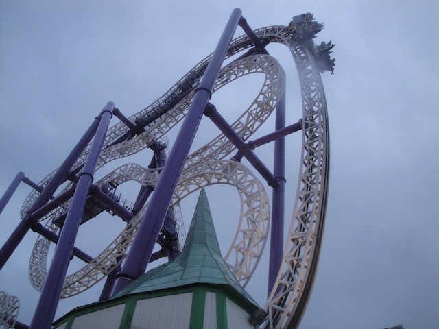
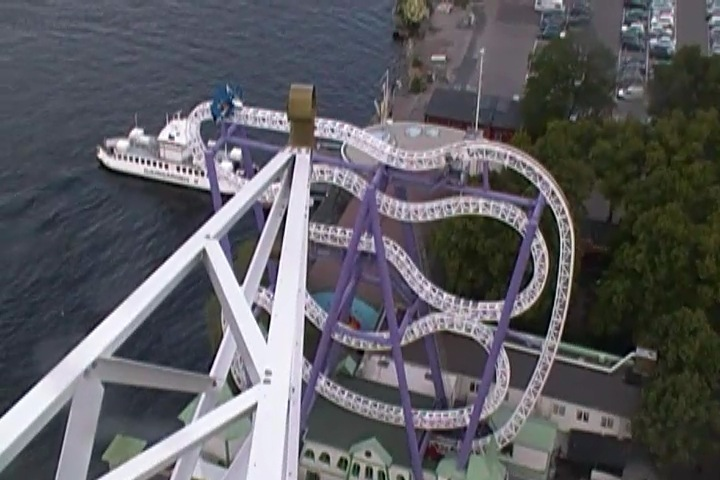
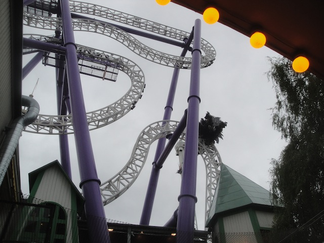
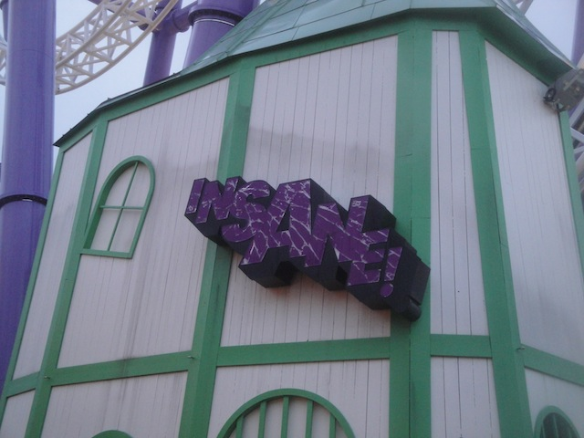

| |
Insane Review

We're here at Gröna Lund. Today's ride we'll be reviewing for you is Insane. Not only is this one of the big Zac Spins, but this is the good one. This is how it's supposed to run. They didn't ruin like they did with Green Lantern @ SFMM. So if you're a So-Cal local, like me, who's visiting and only familiar with Green Lantern, this'll be a real treat for you. Anyways, after getting in the seats and pulling down your vest OTSRs, you're off. First you climb up the lifthill. The lift hill alone is very interesting as you never really ride it straight. If you're facing the rest of the park, you get a really good view of either Gröna Lund or the Baltic Sea. Hell, depending on the weight distribution, you could just be staring up at the sky, and see nothing but the big open blue sky (Who am I kidding. It's Stockholm, there's a good chance its cloudy and rainy). And if you're facing the other side, you'll be getting a really good view of Insane, which looks HUGE from the lifthill. And you may just be looking down at the ground, never knowing when this lifthill will ever end. But quickly, the ride crests the lifthill and you go through the predrop. This actually gives us a little bit of speed and really gets us going. Now usually, you're either leaning slightly foreword, or slightly back, which makes most people slightly nervous. You roll straight through that straight track and swoop down that first dip and get a nice little pop of airtime! It may not be flipping much right now, but don't worry. It flips much more later. And hey, if you get it off balance enough, you can definetly get it going crazy. We then go through another speed hump that doesn't do too much, but it is still fun. But before you know it, you dive down through another one of those twisted drops and head into the midcourse brakes. We've gotten some good flips so far, and it's only about to get better from here.. We go through another one of those funky drops. Its fun, we get some more speed. And then we get the final hump. No matter how balanced your car is, you're getting a flip here. Now granted, you've most likely been flipping more throughout the entire ride. You're on Insane. Not Green Lantern. But even if that was the case, you're almost guaranteed a flip here. The hill was pretty much designed for that. And then you slam into the brake run here. Insane is one of those rides that's just so much fun. It's fun to see just how unbalanced you can make it. And if you've only experienced Green Lantern and wondered why the hell people seem to love all the other Zac Spins? Well, this should answer your question as to "Why?". =)
9/10
Location: Gröna Lund
Opened: 2009
Built by: Intamin
Last Ridden: June 23, 2017
I have ridden this exact same ride at the following parks.
Six Flags Magic Mountain
Insane Photos



Home
|